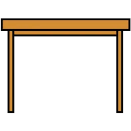
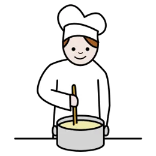

La missió
Una carta a la direcció
Tota la classe defensa la mateixa proposta. Cadascú escriu la seva carta amb el seu full, i tothom hi aporta una frase a la carta comuna, en català i també en la seva llengua.
 1 · TesiQuè proposem, en una sola frase clara.
1 · TesiQuè proposem, en una sola frase clara.
2 · ArgumentsTres, ordenats amb connectors. Cada un amb una raó i una prova.
3 · ConclusióQuè demanem, a qui i des de quan.